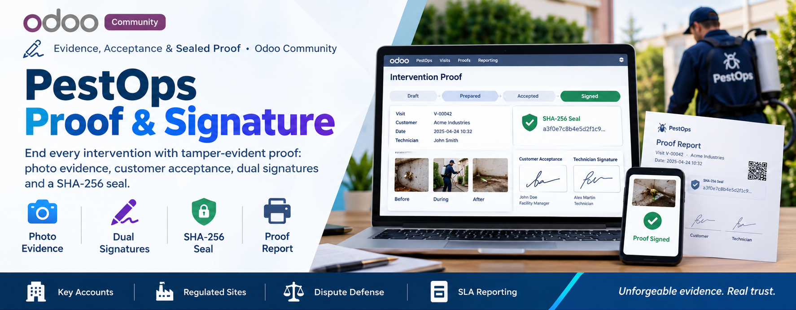
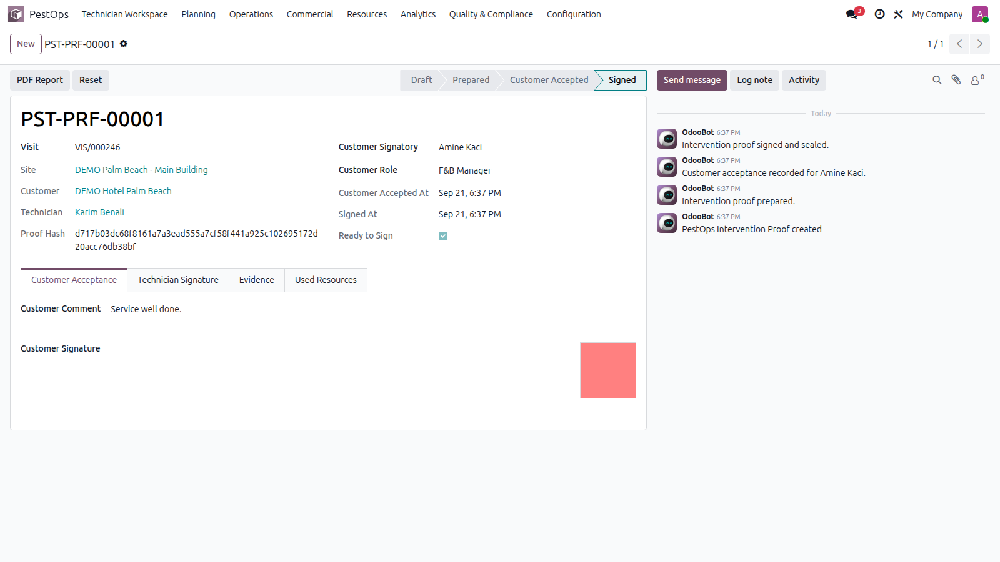
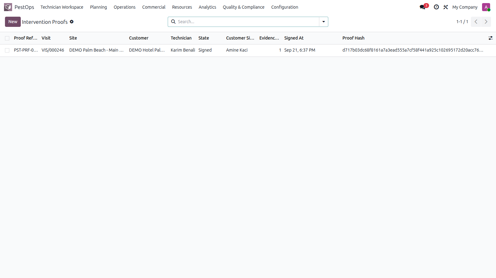

✍️ Evidence, Acceptance & Sealed Proof · Odoo Community
📸 Photo Evidence 🖊️ Dual Signatures 🔒 SHA-256 Seal 🖨️ Proof Report


Signed proof with integrity hash and acceptance trail.
Disputed visits, key-account SLAs and regulated sites all need the same thing: unforgeable evidence that the work happened, was seen and was accepted.
🏨 Key Accounts 🏭 Regulated Sites ⚖️ Dispute Defense 📑 SLA Reporting
Create the proof from the visit — used equipment, treatments and inspections pre-fill automatically. Prepare it, attach before / during / after photo evidence (each fingerprinted on upload), then record customer acceptance with signatory name, role, comment and signature.
The technician signs, and the module computes a SHA-256 seal over visit, customer, timestamps and every evidence fingerprint — then writes the signature back onto the visit. Visits flagged "proof required" cannot close until the proof is signed, and a printable proof report goes to the customer.

Intervention proofs per visit and customer.
| Odoo Version | Community |
|---|---|
| License | LGPL-3 |
| Module Type | Extension (requires PestOps Core) |
| Dependencies | pestops_core, pestops_equipment |
| External Services | None required |
📧 imazighenapps@gmail.com — fast response 🔄 Free Updates